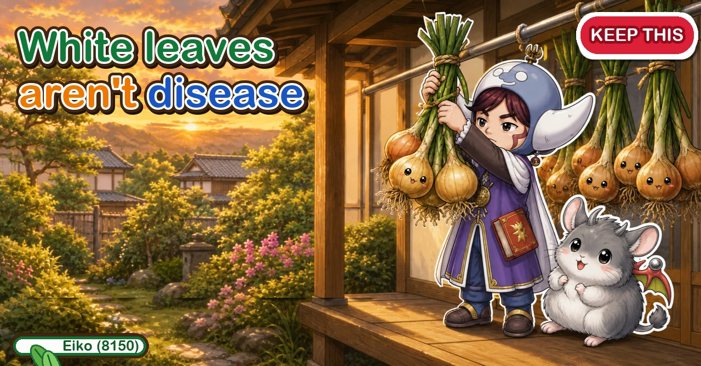
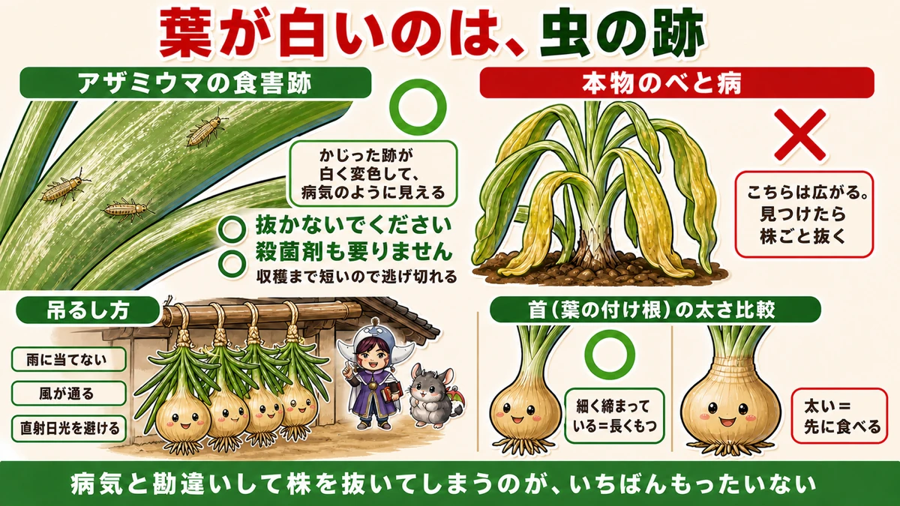
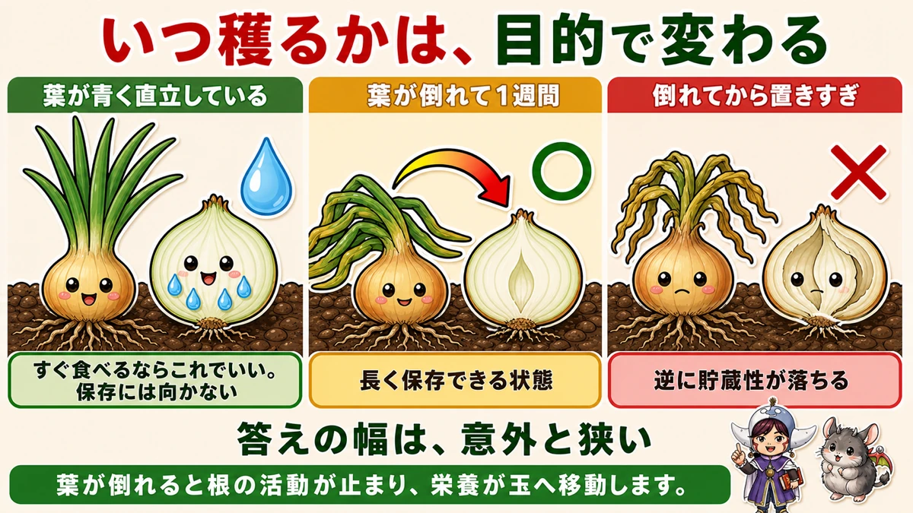
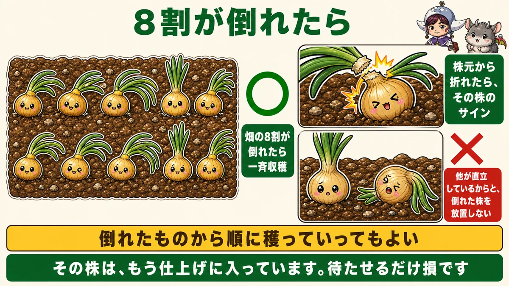
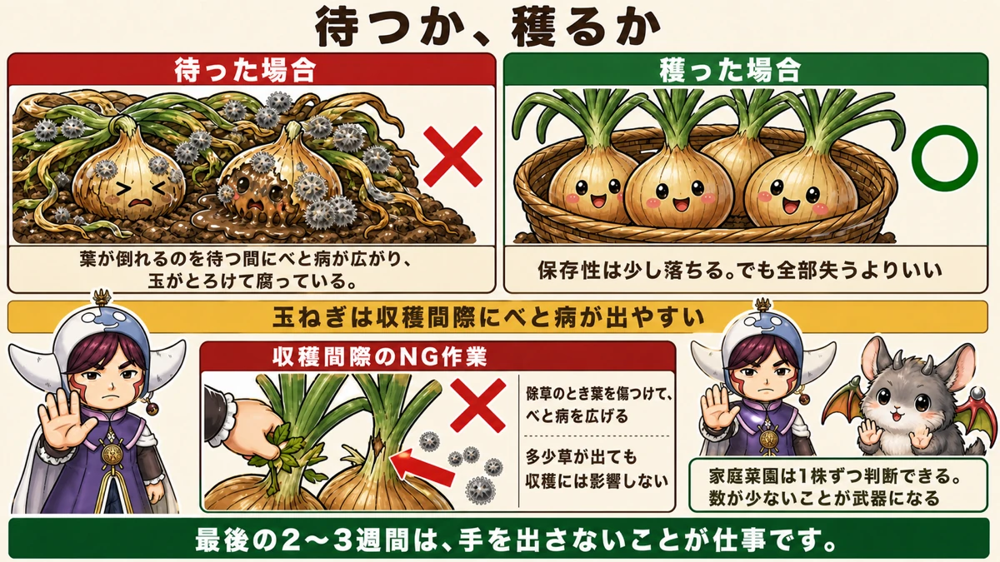

White streaks on the leaves aren't disease 🧅 Don't pull the plant

🗨️ "The leaves are going white. Is it diseased?"
🗨️ "I don't know when to pull them."
🗨️ "They sprouted almost immediately in storage."
Hello, I'm Eiko. Eight years of growing vegetables organically and without pesticides, and a teaching licence in science.
Autumn-planted onions come ready in early summer — the final month of a very long season. Get the judgement wrong here and eight months of work rots in storage.
The point, up front:
White leaves are not disease. Don't pull the plant.
People pull perfectly healthy plants over this, so let's start there ☺️
The white is insect damage

What this diagram says （図解の文字）
- White leaves are insect damage
- Thrips feeding marks ○ ／ genuine downy mildew ×
- The grazed surface discolours white and looks like disease
- ○ don't pull the plant ／ ○ no fungicide needed ／ the harvest is close enough to get away with it
- Mildew does spread. Pull those plants out when you find them
- Hanging them: keep rain off ／ air movement ／ avoid direct sun
Towards harvest, onion and garlic leaves often discolour to a pale, almost transparent white — faded, washed out. It looks like nothing but disease.
And most people respond by reaching for a fungicide, or pulling the plant so it doesn't spread.
Neither is necessary.
The culprit is thrips
These are thrips feeding marks. Very small insects — not easy to spot, though you can see them with the naked eye if you look.
They graze the leaf surface, and the grazed area goes white. Which is exactly why it reads as disease spotting.
At this point you can outrun them
And the important part: thrips at this stage don't do serious damage.
The reason is simple — there isn't much season left. The bulbs are already filled and the plant is only finishing. Some leaf damage doesn't change the outcome.
Pulling a healthy plant because you mistook this for disease is the real loss. It's a classic first-year move.
The genuine disease looks different
Downy mildew does occur. It isn't white discolouration — the leaves yellow and then droop limply. That one spreads.
When you find it, pull those plants promptly. More on this below.
When to lift depends on what you want

What this diagram says （図解の文字）
- When to lift depends on the purpose
- Leaves green and upright × — fine if you're eating them soon; not for storage
- A week after the tops fall ○ — the state that stores well
- Left too long after they fall — storage life drops again
- The window is narrower than you'd think
- When the tops fall, root activity stops and the reserves move into the bulb
You can see onions from above
Unlike potatoes, onions have a real advantage: you can see whether the bulb has filled without digging. It stands proud of the mulch. No guessing.
So once they're a reasonable size, you can lift whenever you like.
Eating soon — before the tops fall is fine
If you're going to eat them, you don't have to wait for the tops to fall. A filled bulb can come up. Eaten fresh and juicy, it's something you only get at this time of year.
Storing — a week after the tops fall
Wait a week after the leaves go over.
Because in that week something specific happens.
When the tops fall, the roots stop
Root activity stops once the tops go over. The plant stops taking up water and nutrients, and switches to finishing:
- the reserves left in the leaves move down into the bulb
- the insides of the leaves hollow out
- the bulb's water content falls and it starts to dry
The result: a lower water content at lifting. And the drier the onion, the longer it keeps. That's what the week buys.
Plus: the bulb is still growing while you wait.
Lifted green, they rot
Lift while the leaves are still green and upright and there's too much water at the neck, which is where rot starts. Not for storage — eat those soon.
But don't overshoot either
Left too long after the tops fall, storage life drops again.
- Too early → too wet, rots
- Right → a week after the tops fall
- Too late → storage life falls
The window is narrower than you'd expect.
The 80% rule

What this diagram says （図解の文字）
- When 80% have fallen
- ○ when 80% of the bed has fallen, lift the lot
- Snapped over at the base is that plant's signal
- × don't leave a fallen plant standing just because the others are still upright
- Lifting them one by one as they fall is also fine
- That plant has already started finishing. Making it wait is pure loss
With a lot of plants, when about 80% of the bed has gone over, lift everything. A clear, usable threshold — you don't need to wait for all of them.
The alternative is lifting each plant as it falls. A snap at the base is that plant's own signal.
And one thing: don't leave a fallen plant in the ground because its neighbours are still standing. That plant has already started finishing; waiting only costs it.
Racing the mildew

What this diagram says （図解の文字）
- Wait, or lift
- × waited — mildew spread while waiting for the tops to fall and the bulbs collapsed and rotted
- ○ lifted — storage life drops slightly; better than losing everything
- Onions are prone to mildew right before harvest
- What not to do near harvest × — damaging the leaves while weeding spreads mildew
- A few weeds won't affect the harvest
Onions have an awkward habit: downy mildew tends to appear right before harvest.
Everything goes well for months and then it spreads through the bed in the last few weeks. Eight months of growing lost in a fortnight is the most painful version of this.
The decision
Wait for the tops to fall and the mildew spreads and the bulbs collapse into rot.
So: if mildew has started and the bulbs are reasonably filled, lift them even though the tops haven't fallen.
Storage life drops a little. Which is much better than losing the lot.
What not to do near harvest
A surprising one: stop weeding.
Earlier in the season, weeding is the main job. In the last few weeks, stop.
Because you damage the leaves
Pulling weeds damages onion leaves — and mildew enters through the wounds. A job done with good intentions becomes the thing that spreads the disease.
A few weeds won't affect the harvest. The plants are finishing; they aren't going to be outcompeted now.
For the last two or three weeks, watching is the job.
Hanging them
- Don't cut the leaves off — leave 20–30 cm
- Tie them in small bundles by the leaves
- Hang them in shade with air moving
The leaves are left so you can tie them, and hanging lets air reach all the way round.
Where
- out of the rain (under an eave)
- with air movement
- out of direct sun
As with potatoes: damp and light are the enemies.
A tight neck keeps longest
One way to sort them: the narrower and tighter the neck, the longer it keeps. Thick, still-juicy necks spoil from there. Eat the thick-necked ones first.
And look at them now and then
One rotten onion spreads to its neighbour. Glance up at the bundles occasionally and take out anything going soft. Removing one saves the rest.
To sum up
- ✅ White, washed-out leaves are thrips damage, not disease
- ✅ At this stage it doesn't matter — the harvest is close
- ✅ Don't pull the plant and don't reach for fungicide
- ✅ Real mildew yellows and droops. Pull those plants
- ✅ You can see onion bulbs without digging
- ✅ Eating soon? Lift before the tops fall
- ✅ Storing? A week after the tops fall
- ✅ When the tops fall, the roots stop and the reserves move into the bulb
- ✅ Lower water at lifting = longer keeping
- ✅ Lifted green, the neck is too wet and rots
- ✅ Left too long, storage life drops. The window is narrow
- ✅ 80% fallen = lift the lot. Or lift each as it falls
- ✅ Mildew shows up right before harvest; lift early rather than lose them
- ✅ Stop weeding near harvest — wounds let mildew in
- ✅ Leave 20–30 cm of leaf, tie in bundles, hang in airy shade
- ✅ Tight necks keep longest; eat thick ones first
- ✅ Check the bundles now and then
You don't have to do all of it. Go out and count how many have fallen over. If it's near eight in ten, this weekend is the harvest 🧅
Thank you for reading!